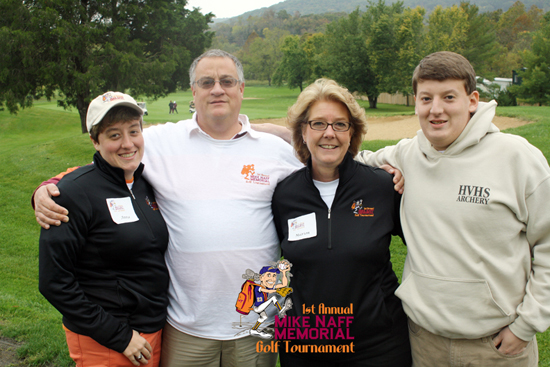
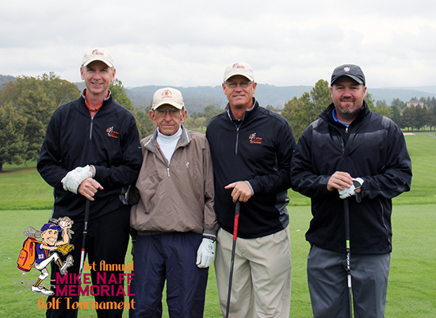
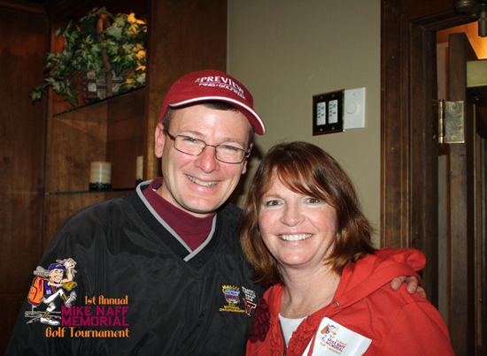

2012 Tournament
The First Annual Mike Naff Memorial Golf Tournament was a huge success with a sold-out field of golfers, tremendous support from our sponsors, a room full of silent auction items, and awesome prizes for every golfer, plus the beautiful facilities at Blacksburg Country Club. The dinner and evening social gave everyone a chance to talk with Mike's family, to reminisce with stories about their fun times with him, and to remember the great man that inspired the tournament. While the weather was less than perfect, everyone participating was focused on our common goal of raising funds for the Mike Naff Memorial Scholarship at Virginia Tech, which enabled us to raise over $24,000 for the scholarship fund.





